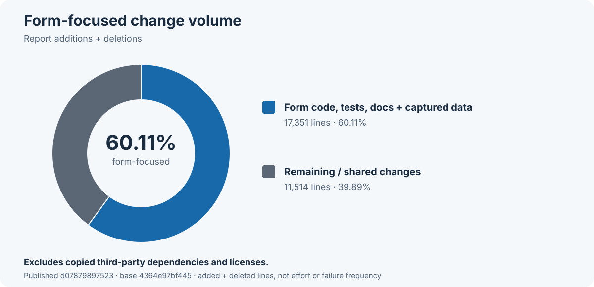
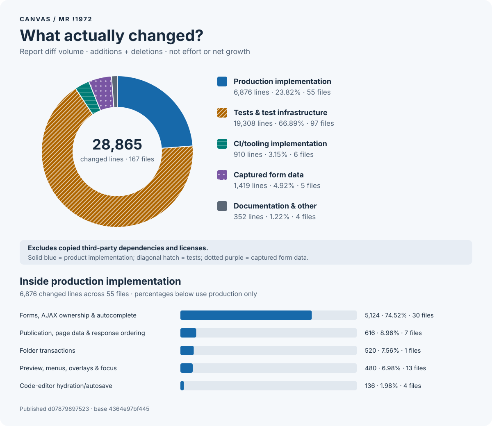

CANVAS · MR !1972
60.11% of reported changed lines are form-focused
Published snapshot d07879897523 against 4364e97bf445 · 167 counted files · 28,865 changed lines (+27,940 added / −925 removed).
Excludes copied third-party dependencies and licenses.
Form production code, directly related tests, supporting code, documentation and captured data account for 17,351 of 28,865 changed lines: +17,136 added / −215 removed. This includes 1,419 captured-data lines; it is not a measure of authored code alone.

Implementation, tests and supporting material
The material breakdown uses the same 28,865 changed lines, not an additional total. It separates implementation, tests and test infrastructure, CI/tooling, captured data and documentation.

Forms account for 74.5% of production changed lines: 5,124 of 6,876. Within tests and test infrastructure, 54.2%—10,468 of 19,308 lines—is directly form-related. The remaining/shared category includes 4,570 shared test lines and 910 CI/tooling lines; neither is credited exclusively to forms.
What this suggests
The concentration supports a focused boundary refactor: clarify ownership and handoffs between Drupal forms/AJAX, React bindings and canonical model updates. Prefer fewer competing authorities over simply moving code between files. Keep validation, draft recovery and widget compatibility intact while simplifying those transitions and reducing duplicated synchronization. Patch size alone is not proof that the form system needs a rewrite, nor evidence that forms cause a matching share of flakes.
Downloads
The charts and CSVs use the same filtered universe. The 167-path inventory records exact additions, deletions and form attribution; exclusion metadata is separate and is not counted.